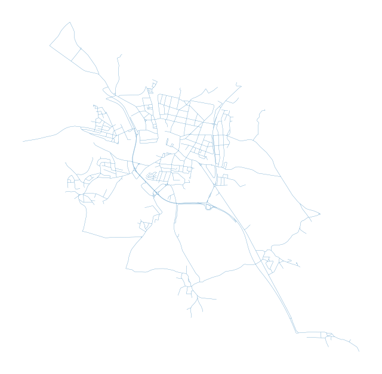
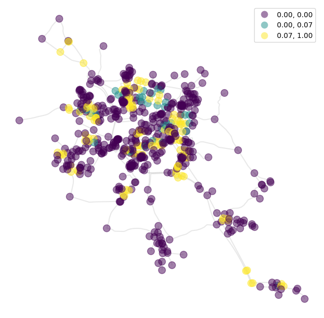
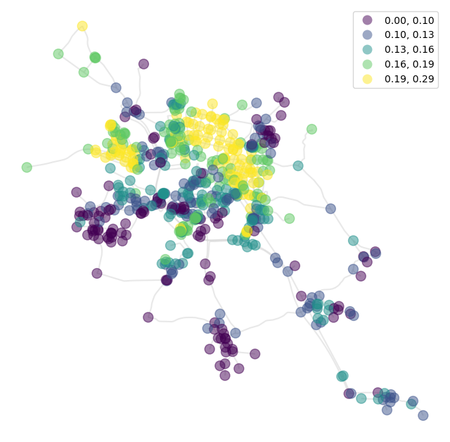
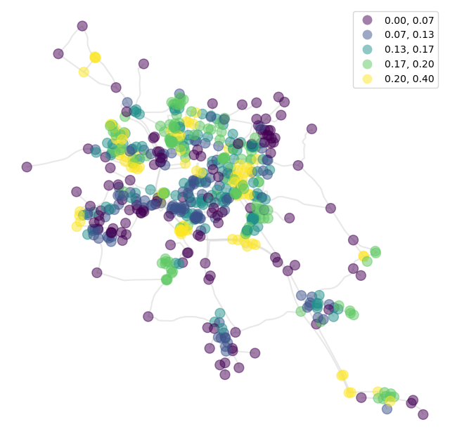

Street network analysis¶
Graph analysis offers three modes, of which the first two are used within momepy:
node-based
value per node
edge-based
value per edge
network-based
single value per network
import momepy
import osmnx as ox
In this notebook, we will look at Písek, Czechia. We retrieve its network from OSM and convert it to a GeoDataFrame:
streets_graph = ox.graph_from_place("Pisek, Czechia", network_type="drive")
streets_graph = ox.projection.project_graph(streets_graph)
streets = ox.graph_to_gdfs(
ox.convert.to_undirected(streets_graph),
nodes=False,
edges=True,
node_geometry=False,
fill_edge_geometry=True,
)
Note: See the detailed explanation of these steps in the centrality notebook.
ax = streets.plot(figsize=(8, 8), linewidth=0.2)
ax.set_axis_off()

We can generate a networkX.MultiGraph, which is used within momepy for network analysis, using gdf_to_nx.
graph = momepy.gdf_to_nx(streets)
Node-based analysis¶
Once we have the graph, we can use momepy functions, like the one measuring clustering:
graph = momepy.clustering(graph, name="clustering")
Using sub-graph¶
Momepy includes local characters measured on the network within a certain radius from each node, like meshedness. The function will generate ego_graph for each node so that it might take a while for more extensive networks. Radius can be defined topologically:
graph = momepy.meshedness(graph, radius=5, name="meshedness")
Or metrically, using distance which has been saved as an edge argument by gdf_to_nx (or any other weight).
graph = momepy.meshedness(
graph, radius=400, name="meshedness400", distance="mm_len"
)
Once we have finished the graph-based analysis, we can go back to GeoPandas. In this notebook, we are interested in nodes only:
nodes = momepy.nx_to_gdf(graph, points=True, lines=False, spatial_weights=False)
Now we can plot our results in a standard way, or link them to other elements (using get_node_id).
Clustering:
ax = nodes.plot(
column="clustering",
markersize=100,
legend=True,
cmap="viridis",
scheme="quantiles",
alpha=0.5,
zorder=2,
figsize=(8, 8),
)
streets.plot(ax=ax, color="lightgrey", alpha=0.5, zorder=1)
ax.set_axis_off()
/home/runner/micromamba/envs/test/lib/python3.14/site-packages/mapclassify/classifiers.py:1767: UserWarning: Not enough unique values in array to form 5 classes. Setting k to 3.
self.bins = quantile(y, k=k)

Meshedness based on topological distance:
ax = nodes.plot(
column="meshedness",
markersize=100,
legend=True,
cmap="viridis",
alpha=0.5,
zorder=2,
scheme="quantiles",
figsize=(8, 8),
)
streets.plot(ax=ax, color="lightgrey", alpha=0.5, zorder=1)
ax.set_axis_off()

And meshedness based on 400 metres:
ax = nodes.plot(
column="meshedness400",
markersize=100,
legend=True,
cmap="viridis",
alpha=0.5,
zorder=2,
scheme="quantiles",
figsize=(8, 8),
)
streets.plot(ax=ax, color="lightgrey", alpha=0.5, zorder=1)
ax.set_axis_off()
